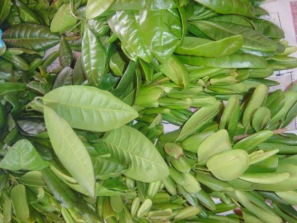
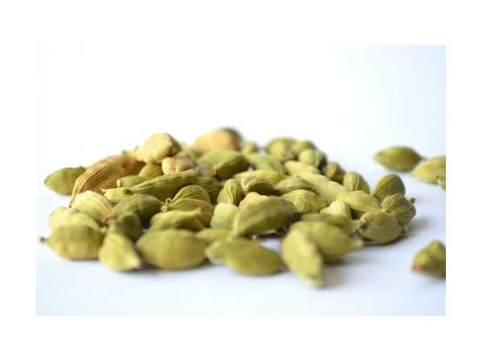
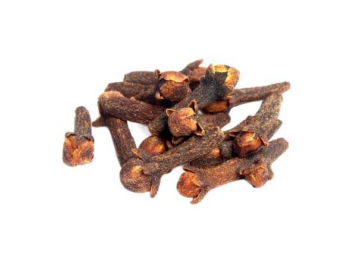
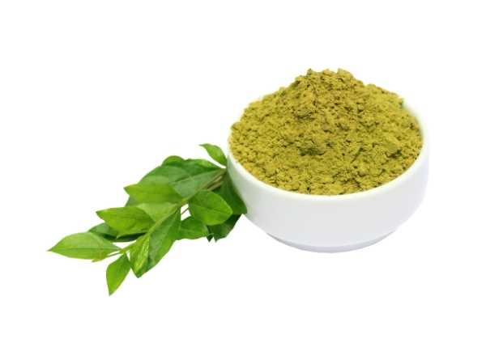
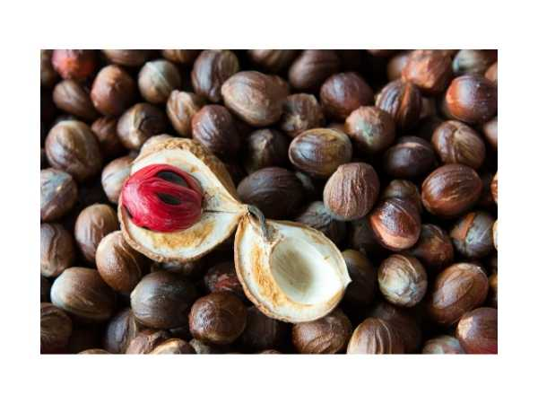
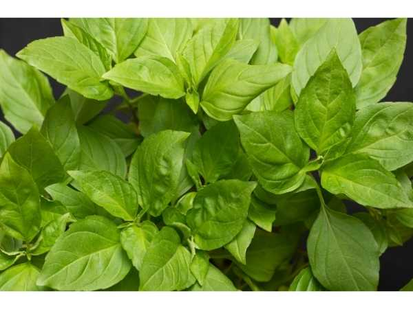

🌶️ Spices & Herbs
Aromatic spices, culinary herbs, and fragrant leaves grown at ArkFarm.

Allspice
Pimenta dioica
Dried unripe berry with combined flavor of cinnamon, nutmeg, and cloves.

Basil - Black / Karu Tulsi
Ocimum tenuiflorum
Sacred holy basil with dark purple leaves; adaptogenic herb central to Ayurveda and Hindu worship.

Bay Leaf
Laurus nobilis
Aromatic leaf used in cooking and traditional medicine.

Bird's Eye Chilly
Capsicum frutescens
Fiery small chilli with intense heat; widely used in South and Southeast Asian cooking and traditional medicine.

Cardamom / Elaichi
Elettaria cardamomum
Queen of spices from the Western Ghats.

Cinnamon
Cinnamomum verum
Aromatic bark spice used in cooking and medicine.

Clove
Syzygium aromaticum
Aromatic flower buds used as a spice worldwide.

Coriander
Coriandrum sativum
Versatile annual herb; leaves used as cilantro, seeds as spice; essential in Indian cooking.

Curry Leaf
Murraya koenigii
Essential aromatic leaf in South Indian cooking.

Herbal - Avarampoo / Tanner's Cassia
Senna auriculata
Traditional medicinal herb with bright yellow flowers.

Herbal - Henna / Maruthani
Lawsonia inermis
Shrub used for body art, hair dye, and traditional medicine.

Herbal - Lemongrass
Cymbopogon citratus
Aromatic grass used in teas, cooking, and traditional medicine.

Karpuravalli / Indian Borage
Plectranthus amboinicus
Succulent aromatic herb with camphor-oregano scent; used for coughs and respiratory conditions.

Mint
Mentha arvensis
Aromatic spreading herb with strong menthol scent; used in cooking, beverages, and medicine.

Nutmeg
Myristica fragrans
Aromatic seed used as spice and in traditional medicine.

Pepper - Bush
Piper nigrum (bush type)
Compact bush pepper suitable for pots and small gardens.

Pepper - Karimunda
Piper nigrum 'Karimunda'
Hardy traditional pepper variety with strong flavor.

Pepper - Panniyur
Piper nigrum 'Panniyur'
High-yielding pepper variety from Kerala.

Rambai Leaf / Pandan
Pandanus amaryllifolius
Fragrant tropical leaf used in Southeast Asian cooking.

Thiruneetru Pachilai / Sweet Basil
Ocimum basilicum
Aromatic culinary herb with sweet clove-like scent; used in cooking and traditional medicine.

Vanilla
Vanilla planifolia
Complete guide to Vanilla (Vanilla planifolia) at ArkFarm.